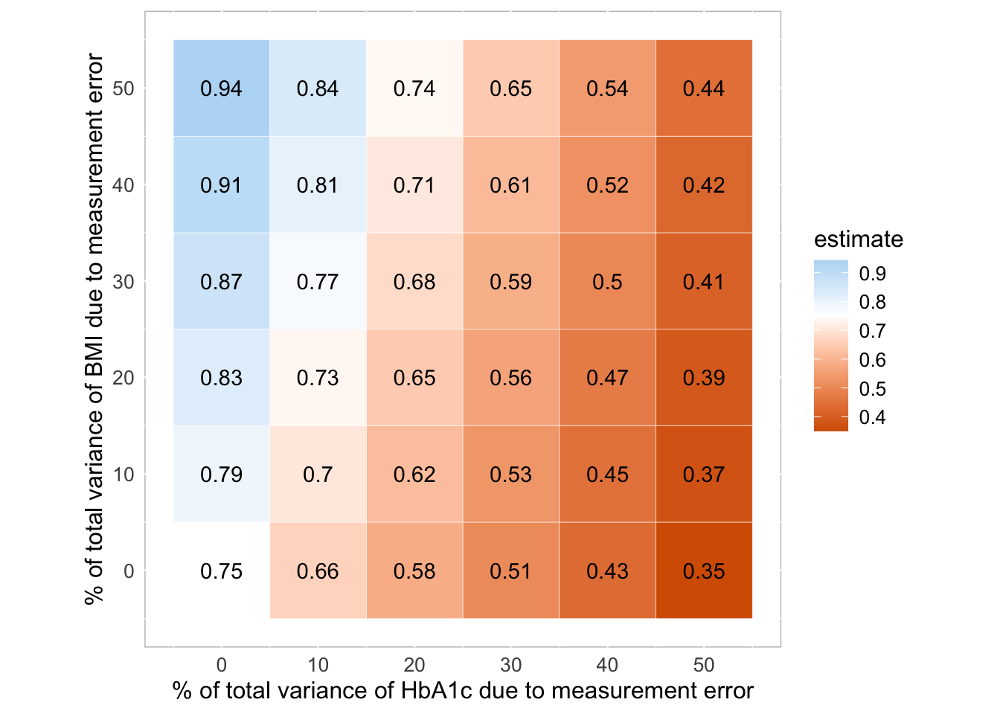

<!DOCTYPE html>
<html xmlns="http://www.w3.org/1999/xhtml" lang="en" xml:lang="en"><head>

<meta charset="utf-8">
<meta name="generator" content="quarto-1.3.353">

<meta name="viewport" content="width=device-width, initial-scale=1.0, user-scalable=yes">

<meta name="author" content="Polina Revina">

<title>Reproducible manuscript, ex2</title>
<style>
code{white-space: pre-wrap;}
span.smallcaps{font-variant: small-caps;}
div.columns{display: flex; gap: min(4vw, 1.5em);}
div.column{flex: auto; overflow-x: auto;}
div.hanging-indent{margin-left: 1.5em; text-indent: -1.5em;}
ul.task-list{list-style: none;}
ul.task-list li input[type="checkbox"] {
  width: 0.8em;
  margin: 0 0.8em 0.2em -1em; /* quarto-specific, see https://github.com/quarto-dev/quarto-cli/issues/4556 */ 
  vertical-align: middle;
}
/* CSS for syntax highlighting */
pre > code.sourceCode { white-space: pre; position: relative; }
pre > code.sourceCode > span { display: inline-block; line-height: 1.25; }
pre > code.sourceCode > span:empty { height: 1.2em; }
.sourceCode { overflow: visible; }
code.sourceCode > span { color: inherit; text-decoration: inherit; }
div.sourceCode { margin: 1em 0; }
pre.sourceCode { margin: 0; }
@media screen {
div.sourceCode { overflow: auto; }
}
@media print {
pre > code.sourceCode { white-space: pre-wrap; }
pre > code.sourceCode > span { text-indent: -5em; padding-left: 5em; }
}
pre.numberSource code
  { counter-reset: source-line 0; }
pre.numberSource code > span
  { position: relative; left: -4em; counter-increment: source-line; }
pre.numberSource code > span > a:first-child::before
  { content: counter(source-line);
    position: relative; left: -1em; text-align: right; vertical-align: baseline;
    border: none; display: inline-block;
    -webkit-touch-callout: none; -webkit-user-select: none;
    -khtml-user-select: none; -moz-user-select: none;
    -ms-user-select: none; user-select: none;
    padding: 0 4px; width: 4em;
  }
pre.numberSource { margin-left: 3em;  padding-left: 4px; }
div.sourceCode
  {   }
@media screen {
pre > code.sourceCode > span > a:first-child::before { text-decoration: underline; }
}
/* CSS for citations */
div.csl-bib-body { }
div.csl-entry {
  clear: both;
}
.hanging-indent div.csl-entry {
  margin-left:2em;
  text-indent:-2em;
}
div.csl-left-margin {
  min-width:2em;
  float:left;
}
div.csl-right-inline {
  margin-left:2em;
  padding-left:1em;
}
div.csl-indent {
  margin-left: 2em;
}</style>


<script src="manuscript_files/libs/clipboard/clipboard.min.js"></script>
<script src="manuscript_files/libs/quarto-html/quarto.js"></script>
<script src="manuscript_files/libs/quarto-html/popper.min.js"></script>
<script src="manuscript_files/libs/quarto-html/tippy.umd.min.js"></script>
<script src="manuscript_files/libs/quarto-html/anchor.min.js"></script>
<link href="manuscript_files/libs/quarto-html/tippy.css" rel="stylesheet">
<link href="manuscript_files/libs/quarto-html/quarto-syntax-highlighting.css" rel="stylesheet" id="quarto-text-highlighting-styles">
<script src="manuscript_files/libs/bootstrap/bootstrap.min.js"></script>
<link href="manuscript_files/libs/bootstrap/bootstrap-icons.css" rel="stylesheet">
<link href="manuscript_files/libs/bootstrap/bootstrap.min.css" rel="stylesheet" id="quarto-bootstrap" data-mode="light">


</head>

<body class="fullcontent">

<div id="quarto-content" class="page-columns page-rows-contents page-layout-article">

<main class="content" id="quarto-document-content">

<header id="title-block-header" class="quarto-title-block default">
<div class="quarto-title">
<h1 class="title">Reproducible manuscript, ex2</h1>
</div>


<div class="quarto-title-meta">

    <div>
    <div class="quarto-title-meta-heading">Author</div>
    <div class="quarto-title-meta-contents">
             <p>Polina Revina </p>
          </div>
  </div>
    
  
    
  </div>
  

</header>

<section id="about" class="level3">
<h3 class="anchored" data-anchor-id="about">About</h3>
<p>This is a manuscript with replication of study by <span class="citation" data-cites="boulesteix">Boulesteix et al. (<a href="#ref-boulesteix" role="doc-biblioref">2020</a>)</span> for markup course exercises.</p>
</section>
<section id="libraries" class="level3">
<h3 class="anchored" data-anchor-id="libraries">Libraries</h3>
<p>If libraries aren’t installed, you can do this with <code>install.packages()</code> command.</p>
<div class="cell">
<div class="sourceCode cell-code" id="cb1"><pre class="sourceCode r code-with-copy"><code class="sourceCode r"><span id="cb1-1"><a href="#cb1-1" aria-hidden="true" tabindex="-1"></a><span class="co"># libraries:</span></span>
<span id="cb1-2"><a href="#cb1-2" aria-hidden="true" tabindex="-1"></a><span class="fu">library</span>(Hmisc)</span></code><button title="Copy to Clipboard" class="code-copy-button"><i class="bi"></i></button></pre></div>
<div class="cell-output cell-output-stderr">
<pre><code>Warning: package 'Hmisc' was built under R version 4.3.3</code></pre>
</div>
<div class="cell-output cell-output-stderr">
<pre><code>
Attaching package: 'Hmisc'</code></pre>
</div>
<div class="cell-output cell-output-stderr">
<pre><code>The following objects are masked from 'package:base':

    format.pval, units</code></pre>
</div>
<div class="sourceCode cell-code" id="cb5"><pre class="sourceCode r code-with-copy"><code class="sourceCode r"><span id="cb5-1"><a href="#cb5-1" aria-hidden="true" tabindex="-1"></a><span class="fu">library</span>(mice)</span></code><button title="Copy to Clipboard" class="code-copy-button"><i class="bi"></i></button></pre></div>
<div class="cell-output cell-output-stderr">
<pre><code>Warning: package 'mice' was built under R version 4.3.3</code></pre>
</div>
<div class="cell-output cell-output-stderr">
<pre><code>
Attaching package: 'mice'</code></pre>
</div>
<div class="cell-output cell-output-stderr">
<pre><code>The following object is masked from 'package:stats':

    filter</code></pre>
</div>
<div class="cell-output cell-output-stderr">
<pre><code>The following objects are masked from 'package:base':

    cbind, rbind</code></pre>
</div>
<div class="sourceCode cell-code" id="cb10"><pre class="sourceCode r code-with-copy"><code class="sourceCode r"><span id="cb10-1"><a href="#cb10-1" aria-hidden="true" tabindex="-1"></a><span class="fu">library</span>(tidyverse)</span></code><button title="Copy to Clipboard" class="code-copy-button"><i class="bi"></i></button></pre></div>
<div class="cell-output cell-output-stderr">
<pre><code>── Attaching core tidyverse packages ──────────────────────── tidyverse 2.0.0 ──
✔ dplyr     1.1.4     ✔ readr     2.1.5
✔ forcats   1.0.0     ✔ stringr   1.5.1
✔ ggplot2   3.5.1     ✔ tibble    3.2.1
✔ lubridate 1.9.3     ✔ tidyr     1.3.1
✔ purrr     1.0.2     </code></pre>
</div>
<div class="cell-output cell-output-stderr">
<pre><code>── Conflicts ────────────────────────────────────────── tidyverse_conflicts() ──
✖ dplyr::filter()    masks mice::filter(), stats::filter()
✖ dplyr::lag()       masks stats::lag()
✖ dplyr::src()       masks Hmisc::src()
✖ dplyr::summarize() masks Hmisc::summarize()
ℹ Use the conflicted package (&lt;http://conflicted.r-lib.org/&gt;) to force all conflicts to become errors</code></pre>
</div>
</div>
</section>
<section id="data" class="level3">
<h3 class="anchored" data-anchor-id="data">Data</h3>
<p>The data can be dowloaded in xpt form from https://wwwn.cdc.gov/nchs/nhanes/continuousnhanes/default.aspx?BeginYear=2015</p>
<div class="cell">
<div class="sourceCode cell-code" id="cb13"><pre class="sourceCode r code-with-copy"><code class="sourceCode r"><span id="cb13-1"><a href="#cb13-1" aria-hidden="true" tabindex="-1"></a>d1 <span class="ot">&lt;-</span> <span class="fu">sasxport.get</span>(<span class="st">"data/DEMO_I.xpt"</span>)</span></code><button title="Copy to Clipboard" class="code-copy-button"><i class="bi"></i></button></pre></div>
<div class="cell-output cell-output-stdout">
<pre><code>Processing SAS dataset DEMO_I    ..</code></pre>
</div>
<div class="sourceCode cell-code" id="cb15"><pre class="sourceCode r code-with-copy"><code class="sourceCode r"><span id="cb15-1"><a href="#cb15-1" aria-hidden="true" tabindex="-1"></a>d2 <span class="ot">&lt;-</span> <span class="fu">sasxport.get</span>(<span class="st">"data/BPX_I.xpt"</span>)</span></code><button title="Copy to Clipboard" class="code-copy-button"><i class="bi"></i></button></pre></div>
<div class="cell-output cell-output-stdout">
<pre><code>Processing SAS dataset BPX_I     ..</code></pre>
</div>
<div class="sourceCode cell-code" id="cb17"><pre class="sourceCode r code-with-copy"><code class="sourceCode r"><span id="cb17-1"><a href="#cb17-1" aria-hidden="true" tabindex="-1"></a>d3 <span class="ot">&lt;-</span> <span class="fu">sasxport.get</span>(<span class="st">"data/BMX_I.xpt"</span>)</span></code><button title="Copy to Clipboard" class="code-copy-button"><i class="bi"></i></button></pre></div>
<div class="cell-output cell-output-stdout">
<pre><code>Processing SAS dataset BMX_I     ..</code></pre>
</div>
<div class="sourceCode cell-code" id="cb19"><pre class="sourceCode r code-with-copy"><code class="sourceCode r"><span id="cb19-1"><a href="#cb19-1" aria-hidden="true" tabindex="-1"></a>d4 <span class="ot">&lt;-</span> <span class="fu">sasxport.get</span>(<span class="st">"data/GHB_I.xpt"</span>)</span></code><button title="Copy to Clipboard" class="code-copy-button"><i class="bi"></i></button></pre></div>
<div class="cell-output cell-output-stdout">
<pre><code>Processing SAS dataset GHB_I     ..</code></pre>
</div>
<div class="sourceCode cell-code" id="cb21"><pre class="sourceCode r code-with-copy"><code class="sourceCode r"><span id="cb21-1"><a href="#cb21-1" aria-hidden="true" tabindex="-1"></a>d5 <span class="ot">&lt;-</span> <span class="fu">sasxport.get</span>(<span class="st">"data/TCHOL_I.xpt"</span>)</span></code><button title="Copy to Clipboard" class="code-copy-button"><i class="bi"></i></button></pre></div>
<div class="cell-output cell-output-stdout">
<pre><code>Processing SAS dataset TCHOL_I   ..</code></pre>
</div>
<div class="sourceCode cell-code" id="cb23"><pre class="sourceCode r code-with-copy"><code class="sourceCode r"><span id="cb23-1"><a href="#cb23-1" aria-hidden="true" tabindex="-1"></a>d1.t <span class="ot">&lt;-</span> <span class="fu">subset</span>(d1,<span class="at">select=</span><span class="fu">c</span>(<span class="st">"seqn"</span>,<span class="st">"riagendr"</span>,<span class="st">"ridageyr"</span>))</span>
<span id="cb23-2"><a href="#cb23-2" aria-hidden="true" tabindex="-1"></a>d2.t <span class="ot">&lt;-</span> <span class="fu">subset</span>(d2,<span class="at">select=</span><span class="fu">c</span>(<span class="st">"seqn"</span>,<span class="st">"bpxsy1"</span>))</span>
<span id="cb23-3"><a href="#cb23-3" aria-hidden="true" tabindex="-1"></a>d3.t <span class="ot">&lt;-</span> <span class="fu">subset</span>(d3,<span class="at">select=</span><span class="fu">c</span>(<span class="st">"seqn"</span>,<span class="st">"bmxbmi"</span>))</span>
<span id="cb23-4"><a href="#cb23-4" aria-hidden="true" tabindex="-1"></a>d4.t <span class="ot">&lt;-</span> <span class="fu">subset</span>(d4,<span class="at">select=</span><span class="fu">c</span>(<span class="st">"seqn"</span>,<span class="st">"lbxgh"</span>))</span>
<span id="cb23-5"><a href="#cb23-5" aria-hidden="true" tabindex="-1"></a>d5.t <span class="ot">&lt;-</span> <span class="fu">subset</span>(d5,<span class="at">select=</span><span class="fu">c</span>(<span class="st">"seqn"</span>,<span class="st">"lbdtcsi"</span>))</span>
<span id="cb23-6"><a href="#cb23-6" aria-hidden="true" tabindex="-1"></a>d <span class="ot">&lt;-</span> <span class="fu">merge</span>(d1.t,d2.t)</span>
<span id="cb23-7"><a href="#cb23-7" aria-hidden="true" tabindex="-1"></a>d <span class="ot">&lt;-</span> <span class="fu">merge</span>(d,d3.t)</span>
<span id="cb23-8"><a href="#cb23-8" aria-hidden="true" tabindex="-1"></a>d <span class="ot">&lt;-</span> <span class="fu">merge</span>(d,d4.t)</span>
<span id="cb23-9"><a href="#cb23-9" aria-hidden="true" tabindex="-1"></a>d <span class="ot">&lt;-</span> <span class="fu">merge</span>(d,d5.t)</span></code><button title="Copy to Clipboard" class="code-copy-button"><i class="bi"></i></button></pre></div>
</div>
<p>Rename variables:</p>
<div class="cell">
<div class="sourceCode cell-code" id="cb24"><pre class="sourceCode r code-with-copy"><code class="sourceCode r"><span id="cb24-1"><a href="#cb24-1" aria-hidden="true" tabindex="-1"></a><span class="co"># RIAGENDR - Gender</span></span>
<span id="cb24-2"><a href="#cb24-2" aria-hidden="true" tabindex="-1"></a><span class="co"># RIDAGEYR - Age in years at screening</span></span>
<span id="cb24-3"><a href="#cb24-3" aria-hidden="true" tabindex="-1"></a><span class="co"># BPXSY1 - Systolic: Blood pres (1st rdg) mm Hg</span></span>
<span id="cb24-4"><a href="#cb24-4" aria-hidden="true" tabindex="-1"></a><span class="co"># BMXBMI - Body Mass Index (kg/m**2)</span></span>
<span id="cb24-5"><a href="#cb24-5" aria-hidden="true" tabindex="-1"></a><span class="co"># LBDTCSI - Total Cholesterol (mmol/L)</span></span>
<span id="cb24-6"><a href="#cb24-6" aria-hidden="true" tabindex="-1"></a><span class="co"># LBXGH - Glycohemoglobin (%)</span></span>
<span id="cb24-7"><a href="#cb24-7" aria-hidden="true" tabindex="-1"></a>d<span class="sc">$</span>age <span class="ot">&lt;-</span> d<span class="sc">$</span>ridageyr</span>
<span id="cb24-8"><a href="#cb24-8" aria-hidden="true" tabindex="-1"></a>d<span class="sc">$</span>sex <span class="ot">&lt;-</span> d<span class="sc">$</span>riagendr</span>
<span id="cb24-9"><a href="#cb24-9" aria-hidden="true" tabindex="-1"></a>d<span class="sc">$</span>bp <span class="ot">&lt;-</span> d<span class="sc">$</span>bpxsy1</span>
<span id="cb24-10"><a href="#cb24-10" aria-hidden="true" tabindex="-1"></a>d<span class="sc">$</span>bmi <span class="ot">&lt;-</span> d<span class="sc">$</span>bmxbmi</span>
<span id="cb24-11"><a href="#cb24-11" aria-hidden="true" tabindex="-1"></a>d<span class="sc">$</span>HbA1C <span class="ot">&lt;-</span> d<span class="sc">$</span>lbxgh</span>
<span id="cb24-12"><a href="#cb24-12" aria-hidden="true" tabindex="-1"></a>d<span class="sc">$</span>chol <span class="ot">&lt;-</span> d<span class="sc">$</span>lbdtcsi</span></code><button title="Copy to Clipboard" class="code-copy-button"><i class="bi"></i></button></pre></div>
</div>
<p>Recode as NA:</p>
<div class="cell">
<div class="sourceCode cell-code" id="cb25"><pre class="sourceCode r code-with-copy"><code class="sourceCode r"><span id="cb25-1"><a href="#cb25-1" aria-hidden="true" tabindex="-1"></a>d<span class="sc">$</span>age[d<span class="sc">$</span>age<span class="sc">&lt;</span><span class="dv">18</span>] <span class="ot">&lt;-</span> <span class="cn">NA</span></span></code><button title="Copy to Clipboard" class="code-copy-button"><i class="bi"></i></button></pre></div>
</div>
<p>Select complete cases:</p>
<div class="cell">
<div class="sourceCode cell-code" id="cb26"><pre class="sourceCode r code-with-copy"><code class="sourceCode r"><span id="cb26-1"><a href="#cb26-1" aria-hidden="true" tabindex="-1"></a>dc <span class="ot">&lt;-</span> <span class="fu">cc</span>(<span class="fu">subset</span>(d,<span class="at">select=</span><span class="fu">c</span>(<span class="st">"age"</span>,<span class="st">"sex"</span>,<span class="st">"bmi"</span>,<span class="st">"HbA1C"</span>,<span class="st">"bp"</span>)))</span></code><button title="Copy to Clipboard" class="code-copy-button"><i class="bi"></i></button></pre></div>
</div>
</section>
<section id="analysis" class="level3">
<h3 class="anchored" data-anchor-id="analysis">Analysis</h3>
<div class="cell">
<div class="sourceCode cell-code" id="cb27"><pre class="sourceCode r code-with-copy"><code class="sourceCode r"><span id="cb27-1"><a href="#cb27-1" aria-hidden="true" tabindex="-1"></a><span class="fu">summary</span>(<span class="fu">lm</span>(bp <span class="sc">~</span> HbA1C <span class="sc">+</span> age <span class="sc">+</span> <span class="fu">as.factor</span>(sex), <span class="at">data=</span>dc))</span></code><button title="Copy to Clipboard" class="code-copy-button"><i class="bi"></i></button></pre></div>
<div class="cell-output cell-output-stdout">
<pre><code>
Call:
lm(formula = bp ~ HbA1C + age + as.factor(sex), data = dc)

Residuals:
Systolic: Blood pres (1st rdg) mm Hg 
    Min      1Q  Median      3Q     Max 
-49.887 -10.509  -1.378   8.491 107.583 

Coefficients:
                Estimate Std. Error t value Pr(&gt;|t|)    
(Intercept)     98.75149    1.21418  81.332  &lt; 2e-16 ***
HbA1C            1.12638    0.20291   5.551 2.98e-08 ***
age              0.44486    0.01284  34.648  &lt; 2e-16 ***
as.factor(sex)2 -3.24792    0.45164  -7.191 7.34e-13 ***
---
Signif. codes:  0 '***' 0.001 '**' 0.01 '*' 0.05 '.' 0.1 ' ' 1

Residual standard error: 16.1 on 5088 degrees of freedom
Multiple R-squared:  0.2305,    Adjusted R-squared:   0.23 
F-statistic:   508 on 3 and 5088 DF,  p-value: &lt; 2.2e-16</code></pre>
</div>
<div class="sourceCode cell-code" id="cb29"><pre class="sourceCode r code-with-copy"><code class="sourceCode r"><span id="cb29-1"><a href="#cb29-1" aria-hidden="true" tabindex="-1"></a><span class="fu">confint</span>(<span class="fu">lm</span>(bp <span class="sc">~</span> HbA1C <span class="sc">+</span> age <span class="sc">+</span> <span class="fu">as.factor</span>(sex), <span class="at">data=</span>dc))</span></code><button title="Copy to Clipboard" class="code-copy-button"><i class="bi"></i></button></pre></div>
<div class="cell-output cell-output-stdout">
<pre><code>                     2.5 %      97.5 %
(Intercept)     96.3711755 101.1317982
HbA1C            0.7285836   1.5241825
age              0.4196932   0.4700355
as.factor(sex)2 -4.1333281  -2.3625106</code></pre>
</div>
<div class="sourceCode cell-code" id="cb31"><pre class="sourceCode r code-with-copy"><code class="sourceCode r"><span id="cb31-1"><a href="#cb31-1" aria-hidden="true" tabindex="-1"></a><span class="fu">summary</span>(<span class="fu">lm</span>(bp <span class="sc">~</span> HbA1C <span class="sc">+</span> bmi <span class="sc">+</span> age <span class="sc">+</span> <span class="fu">as.factor</span>(sex), <span class="at">data=</span>dc))</span></code><button title="Copy to Clipboard" class="code-copy-button"><i class="bi"></i></button></pre></div>
<div class="cell-output cell-output-stdout">
<pre><code>
Call:
lm(formula = bp ~ HbA1C + bmi + age + as.factor(sex), data = dc)

Residuals:
Systolic: Blood pres (1st rdg) mm Hg 
    Min      1Q  Median      3Q     Max 
-51.068 -10.251  -1.504   8.264 107.410 

Coefficients:
                Estimate Std. Error t value Pr(&gt;|t|)    
(Intercept)     92.65583    1.39320  66.506  &lt; 2e-16 ***
HbA1C            0.75177    0.20596   3.650 0.000265 ***
bmi              0.28632    0.03282   8.724  &lt; 2e-16 ***
age              0.44586    0.01275  34.979  &lt; 2e-16 ***
as.factor(sex)2 -3.63115    0.45049  -8.060  9.4e-16 ***
---
Signif. codes:  0 '***' 0.001 '**' 0.01 '*' 0.05 '.' 0.1 ' ' 1

Residual standard error: 15.98 on 5087 degrees of freedom
Multiple R-squared:  0.2418,    Adjusted R-squared:  0.2412 
F-statistic: 405.7 on 4 and 5087 DF,  p-value: &lt; 2.2e-16</code></pre>
</div>
<div class="sourceCode cell-code" id="cb33"><pre class="sourceCode r code-with-copy"><code class="sourceCode r"><span id="cb33-1"><a href="#cb33-1" aria-hidden="true" tabindex="-1"></a><span class="fu">confint</span>(<span class="fu">lm</span>(bp <span class="sc">~</span> HbA1C <span class="sc">+</span> bmi <span class="sc">+</span> age <span class="sc">+</span> <span class="fu">as.factor</span>(sex), <span class="at">data=</span>dc))</span></code><button title="Copy to Clipboard" class="code-copy-button"><i class="bi"></i></button></pre></div>
<div class="cell-output cell-output-stdout">
<pre><code>                     2.5 %     97.5 %
(Intercept)     89.9245592 95.3871089
HbA1C            0.3479966  1.1555348
bmi              0.2219815  0.3506673
age              0.4208695  0.4708464
as.factor(sex)2 -4.5143014 -2.7479929</code></pre>
</div>
</div>
</section>
<section id="simulation-of-measurement-error" class="level3">
<h3 class="anchored" data-anchor-id="simulation-of-measurement-error">Simulation of measurement error</h3>
<div class="cell">
<div class="sourceCode cell-code" id="cb35"><pre class="sourceCode r code-with-copy"><code class="sourceCode r"><span id="cb35-1"><a href="#cb35-1" aria-hidden="true" tabindex="-1"></a>ref <span class="ot">&lt;-</span> <span class="fu">lm</span>(bp <span class="sc">~</span> HbA1C <span class="sc">+</span> bmi <span class="sc">+</span> age <span class="sc">+</span> <span class="fu">as.factor</span>(sex), <span class="at">data=</span>dc)<span class="sc">$</span>coef[<span class="dv">2</span>]</span>
<span id="cb35-2"><a href="#cb35-2" aria-hidden="true" tabindex="-1"></a>n.sim <span class="ot">&lt;-</span> <span class="fl">1e3</span></span>
<span id="cb35-3"><a href="#cb35-3" aria-hidden="true" tabindex="-1"></a>perc.me.exp <span class="ot">&lt;-</span> <span class="fu">seq</span>(<span class="dv">0</span>,.<span class="dv">5</span>,.<span class="dv">1</span>)</span>
<span id="cb35-4"><a href="#cb35-4" aria-hidden="true" tabindex="-1"></a>perc.me.conf<span class="ot">&lt;-</span> <span class="fu">seq</span>(<span class="dv">0</span>,.<span class="dv">5</span>,.<span class="dv">1</span>)</span>
<span id="cb35-5"><a href="#cb35-5" aria-hidden="true" tabindex="-1"></a>scenarios <span class="ot">&lt;-</span> <span class="fu">expand.grid</span>(perc.me.exp,perc.me.conf)</span>
<span id="cb35-6"><a href="#cb35-6" aria-hidden="true" tabindex="-1"></a>var.exp <span class="ot">&lt;-</span> <span class="fu">var</span>(dc<span class="sc">$</span>HbA1C)</span>
<span id="cb35-7"><a href="#cb35-7" aria-hidden="true" tabindex="-1"></a>var.conf <span class="ot">&lt;-</span> <span class="fu">var</span>(dc<span class="sc">$</span>bmi)</span>
<span id="cb35-8"><a href="#cb35-8" aria-hidden="true" tabindex="-1"></a>n <span class="ot">&lt;-</span> <span class="fu">dim</span>(dc)[<span class="dv">1</span>]</span>
<span id="cb35-9"><a href="#cb35-9" aria-hidden="true" tabindex="-1"></a>beta.hat <span class="ot">&lt;-</span> <span class="fu">matrix</span>(<span class="at">ncol=</span><span class="fu">dim</span>(scenarios)[<span class="dv">1</span>], <span class="at">nrow=</span>n.sim)</span>
<span id="cb35-10"><a href="#cb35-10" aria-hidden="true" tabindex="-1"></a><span class="cf">for</span> (k <span class="cf">in</span> <span class="dv">1</span><span class="sc">:</span>n.sim){</span>
<span id="cb35-11"><a href="#cb35-11" aria-hidden="true" tabindex="-1"></a>  <span class="fu">print</span>(k)</span>
<span id="cb35-12"><a href="#cb35-12" aria-hidden="true" tabindex="-1"></a>  <span class="fu">set.seed</span>(k)</span>
<span id="cb35-13"><a href="#cb35-13" aria-hidden="true" tabindex="-1"></a>  <span class="cf">for</span> (i <span class="cf">in</span> <span class="dv">1</span><span class="sc">:</span><span class="fu">dim</span>(scenarios)[<span class="dv">1</span>]){</span>
<span id="cb35-14"><a href="#cb35-14" aria-hidden="true" tabindex="-1"></a>    var.me.exp <span class="ot">&lt;-</span> var.exp<span class="sc">*</span>scenarios[i,<span class="dv">1</span>]<span class="sc">/</span>(<span class="dv">1</span><span class="sc">-</span>scenarios[i,<span class="dv">1</span>])</span>
<span id="cb35-15"><a href="#cb35-15" aria-hidden="true" tabindex="-1"></a>    var.me.conf <span class="ot">&lt;-</span> var.conf<span class="sc">*</span>scenarios[i,<span class="dv">2</span>]<span class="sc">/</span>(<span class="dv">1</span><span class="sc">-</span>scenarios[i,<span class="dv">2</span>])</span>
<span id="cb35-16"><a href="#cb35-16" aria-hidden="true" tabindex="-1"></a>    dc<span class="sc">$</span>HbA1C.me <span class="ot">&lt;-</span> dc<span class="sc">$</span>HbA1C <span class="sc">+</span> <span class="fu">rnorm</span>(<span class="fu">dim</span>(dc)[<span class="dv">1</span>], <span class="dv">0</span>, <span class="fu">sqrt</span>(var.me.exp) )</span>
<span id="cb35-17"><a href="#cb35-17" aria-hidden="true" tabindex="-1"></a>    dc<span class="sc">$</span>bmi.me <span class="ot">&lt;-</span> dc<span class="sc">$</span>bmi <span class="sc">+</span> <span class="fu">rnorm</span>(<span class="fu">dim</span>(dc)[<span class="dv">1</span>], <span class="dv">0</span>, <span class="fu">sqrt</span>(var.me.conf) )</span>
<span id="cb35-18"><a href="#cb35-18" aria-hidden="true" tabindex="-1"></a>    beta.hat[k,i] <span class="ot">&lt;-</span> <span class="fu">lm</span>(bp <span class="sc">~</span> HbA1C.me <span class="sc">+</span> age <span class="sc">+</span> bmi.me <span class="sc">+</span> <span class="fu">as.factor</span>(sex), <span class="at">data=</span>dc)<span class="sc">$</span>coef[<span class="dv">2</span>]</span>
<span id="cb35-19"><a href="#cb35-19" aria-hidden="true" tabindex="-1"></a>  }}</span></code><button title="Copy to Clipboard" class="code-copy-button"><i class="bi"></i></button></pre></div>
<div class="cell-output cell-output-stdout">
<pre><code>[1] 1
[1] 2
[1] 3
[1] 4
[1] 5
[1] 6
[1] 7
[1] 8
[1] 9
[1] 10
[1] 11
[1] 12
[1] 13
[1] 14
[1] 15
[1] 16
[1] 17
[1] 18
[1] 19
[1] 20
[1] 21
[1] 22
[1] 23
[1] 24
[1] 25
[1] 26
[1] 27
[1] 28
[1] 29
[1] 30
[1] 31
[1] 32
[1] 33
[1] 34
[1] 35
[1] 36
[1] 37
[1] 38
[1] 39
[1] 40
[1] 41
[1] 42
[1] 43
[1] 44
[1] 45
[1] 46
[1] 47
[1] 48
[1] 49
[1] 50
[1] 51
[1] 52
[1] 53
[1] 54
[1] 55
[1] 56
[1] 57
[1] 58
[1] 59
[1] 60
[1] 61
[1] 62
[1] 63
[1] 64
[1] 65
[1] 66
[1] 67
[1] 68
[1] 69
[1] 70
[1] 71
[1] 72
[1] 73
[1] 74
[1] 75
[1] 76
[1] 77
[1] 78
[1] 79
[1] 80
[1] 81
[1] 82
[1] 83
[1] 84
[1] 85
[1] 86
[1] 87
[1] 88
[1] 89
[1] 90
[1] 91
[1] 92
[1] 93
[1] 94
[1] 95
[1] 96
[1] 97
[1] 98
[1] 99
[1] 100
[1] 101
[1] 102
[1] 103
[1] 104
[1] 105
[1] 106
[1] 107
[1] 108
[1] 109
[1] 110
[1] 111
[1] 112
[1] 113
[1] 114
[1] 115
[1] 116
[1] 117
[1] 118
[1] 119
[1] 120
[1] 121
[1] 122
[1] 123
[1] 124
[1] 125
[1] 126
[1] 127
[1] 128
[1] 129
[1] 130
[1] 131
[1] 132
[1] 133
[1] 134
[1] 135
[1] 136
[1] 137
[1] 138
[1] 139
[1] 140
[1] 141
[1] 142
[1] 143
[1] 144
[1] 145
[1] 146
[1] 147
[1] 148
[1] 149
[1] 150
[1] 151
[1] 152
[1] 153
[1] 154
[1] 155
[1] 156
[1] 157
[1] 158
[1] 159
[1] 160
[1] 161
[1] 162
[1] 163
[1] 164
[1] 165
[1] 166
[1] 167
[1] 168
[1] 169
[1] 170
[1] 171
[1] 172
[1] 173
[1] 174
[1] 175
[1] 176
[1] 177
[1] 178
[1] 179
[1] 180
[1] 181
[1] 182
[1] 183
[1] 184
[1] 185
[1] 186
[1] 187
[1] 188
[1] 189
[1] 190
[1] 191
[1] 192
[1] 193
[1] 194
[1] 195
[1] 196
[1] 197
[1] 198
[1] 199
[1] 200
[1] 201
[1] 202
[1] 203
[1] 204
[1] 205
[1] 206
[1] 207
[1] 208
[1] 209
[1] 210
[1] 211
[1] 212
[1] 213
[1] 214
[1] 215
[1] 216
[1] 217
[1] 218
[1] 219
[1] 220
[1] 221
[1] 222
[1] 223
[1] 224
[1] 225
[1] 226
[1] 227
[1] 228
[1] 229
[1] 230
[1] 231
[1] 232
[1] 233
[1] 234
[1] 235
[1] 236
[1] 237
[1] 238
[1] 239
[1] 240
[1] 241
[1] 242
[1] 243
[1] 244
[1] 245
[1] 246
[1] 247
[1] 248
[1] 249
[1] 250
[1] 251
[1] 252
[1] 253
[1] 254
[1] 255
[1] 256
[1] 257
[1] 258
[1] 259
[1] 260
[1] 261
[1] 262
[1] 263
[1] 264
[1] 265
[1] 266
[1] 267
[1] 268
[1] 269
[1] 270
[1] 271
[1] 272
[1] 273
[1] 274
[1] 275
[1] 276
[1] 277
[1] 278
[1] 279
[1] 280
[1] 281
[1] 282
[1] 283
[1] 284
[1] 285
[1] 286
[1] 287
[1] 288
[1] 289
[1] 290
[1] 291
[1] 292
[1] 293
[1] 294
[1] 295
[1] 296
[1] 297
[1] 298
[1] 299
[1] 300
[1] 301
[1] 302
[1] 303
[1] 304
[1] 305
[1] 306
[1] 307
[1] 308
[1] 309
[1] 310
[1] 311
[1] 312
[1] 313
[1] 314
[1] 315
[1] 316
[1] 317
[1] 318
[1] 319
[1] 320
[1] 321
[1] 322
[1] 323
[1] 324
[1] 325
[1] 326
[1] 327
[1] 328
[1] 329
[1] 330
[1] 331
[1] 332
[1] 333
[1] 334
[1] 335
[1] 336
[1] 337
[1] 338
[1] 339
[1] 340
[1] 341
[1] 342
[1] 343
[1] 344
[1] 345
[1] 346
[1] 347
[1] 348
[1] 349
[1] 350
[1] 351
[1] 352
[1] 353
[1] 354
[1] 355
[1] 356
[1] 357
[1] 358
[1] 359
[1] 360
[1] 361
[1] 362
[1] 363
[1] 364
[1] 365
[1] 366
[1] 367
[1] 368
[1] 369
[1] 370
[1] 371
[1] 372
[1] 373
[1] 374
[1] 375
[1] 376
[1] 377
[1] 378
[1] 379
[1] 380
[1] 381
[1] 382
[1] 383
[1] 384
[1] 385
[1] 386
[1] 387
[1] 388
[1] 389
[1] 390
[1] 391
[1] 392
[1] 393
[1] 394
[1] 395
[1] 396
[1] 397
[1] 398
[1] 399
[1] 400
[1] 401
[1] 402
[1] 403
[1] 404
[1] 405
[1] 406
[1] 407
[1] 408
[1] 409
[1] 410
[1] 411
[1] 412
[1] 413
[1] 414
[1] 415
[1] 416
[1] 417
[1] 418
[1] 419
[1] 420
[1] 421
[1] 422
[1] 423
[1] 424
[1] 425
[1] 426
[1] 427
[1] 428
[1] 429
[1] 430
[1] 431
[1] 432
[1] 433
[1] 434
[1] 435
[1] 436
[1] 437
[1] 438
[1] 439
[1] 440
[1] 441
[1] 442
[1] 443
[1] 444
[1] 445
[1] 446
[1] 447
[1] 448
[1] 449
[1] 450
[1] 451
[1] 452
[1] 453
[1] 454
[1] 455
[1] 456
[1] 457
[1] 458
[1] 459
[1] 460
[1] 461
[1] 462
[1] 463
[1] 464
[1] 465
[1] 466
[1] 467
[1] 468
[1] 469
[1] 470
[1] 471
[1] 472
[1] 473
[1] 474
[1] 475
[1] 476
[1] 477
[1] 478
[1] 479
[1] 480
[1] 481
[1] 482
[1] 483
[1] 484
[1] 485
[1] 486
[1] 487
[1] 488
[1] 489
[1] 490
[1] 491
[1] 492
[1] 493
[1] 494
[1] 495
[1] 496
[1] 497
[1] 498
[1] 499
[1] 500
[1] 501
[1] 502
[1] 503
[1] 504
[1] 505
[1] 506
[1] 507
[1] 508
[1] 509
[1] 510
[1] 511
[1] 512
[1] 513
[1] 514
[1] 515
[1] 516
[1] 517
[1] 518
[1] 519
[1] 520
[1] 521
[1] 522
[1] 523
[1] 524
[1] 525
[1] 526
[1] 527
[1] 528
[1] 529
[1] 530
[1] 531
[1] 532
[1] 533
[1] 534
[1] 535
[1] 536
[1] 537
[1] 538
[1] 539
[1] 540
[1] 541
[1] 542
[1] 543
[1] 544
[1] 545
[1] 546
[1] 547
[1] 548
[1] 549
[1] 550
[1] 551
[1] 552
[1] 553
[1] 554
[1] 555
[1] 556
[1] 557
[1] 558
[1] 559
[1] 560
[1] 561
[1] 562
[1] 563
[1] 564
[1] 565
[1] 566
[1] 567
[1] 568
[1] 569
[1] 570
[1] 571
[1] 572
[1] 573
[1] 574
[1] 575
[1] 576
[1] 577
[1] 578
[1] 579
[1] 580
[1] 581
[1] 582
[1] 583
[1] 584
[1] 585
[1] 586
[1] 587
[1] 588
[1] 589
[1] 590
[1] 591
[1] 592
[1] 593
[1] 594
[1] 595
[1] 596
[1] 597
[1] 598
[1] 599
[1] 600
[1] 601
[1] 602
[1] 603
[1] 604
[1] 605
[1] 606
[1] 607
[1] 608
[1] 609
[1] 610
[1] 611
[1] 612
[1] 613
[1] 614
[1] 615
[1] 616
[1] 617
[1] 618
[1] 619
[1] 620
[1] 621
[1] 622
[1] 623
[1] 624
[1] 625
[1] 626
[1] 627
[1] 628
[1] 629
[1] 630
[1] 631
[1] 632
[1] 633
[1] 634
[1] 635
[1] 636
[1] 637
[1] 638
[1] 639
[1] 640
[1] 641
[1] 642
[1] 643
[1] 644
[1] 645
[1] 646
[1] 647
[1] 648
[1] 649
[1] 650
[1] 651
[1] 652
[1] 653
[1] 654
[1] 655
[1] 656
[1] 657
[1] 658
[1] 659
[1] 660
[1] 661
[1] 662
[1] 663
[1] 664
[1] 665
[1] 666
[1] 667
[1] 668
[1] 669
[1] 670
[1] 671
[1] 672
[1] 673
[1] 674
[1] 675
[1] 676
[1] 677
[1] 678
[1] 679
[1] 680
[1] 681
[1] 682
[1] 683
[1] 684
[1] 685
[1] 686
[1] 687
[1] 688
[1] 689
[1] 690
[1] 691
[1] 692
[1] 693
[1] 694
[1] 695
[1] 696
[1] 697
[1] 698
[1] 699
[1] 700
[1] 701
[1] 702
[1] 703
[1] 704
[1] 705
[1] 706
[1] 707
[1] 708
[1] 709
[1] 710
[1] 711
[1] 712
[1] 713
[1] 714
[1] 715
[1] 716
[1] 717
[1] 718
[1] 719
[1] 720
[1] 721
[1] 722
[1] 723
[1] 724
[1] 725
[1] 726
[1] 727
[1] 728
[1] 729
[1] 730
[1] 731
[1] 732
[1] 733
[1] 734
[1] 735
[1] 736
[1] 737
[1] 738
[1] 739
[1] 740
[1] 741
[1] 742
[1] 743
[1] 744
[1] 745
[1] 746
[1] 747
[1] 748
[1] 749
[1] 750
[1] 751
[1] 752
[1] 753
[1] 754
[1] 755
[1] 756
[1] 757
[1] 758
[1] 759
[1] 760
[1] 761
[1] 762
[1] 763
[1] 764
[1] 765
[1] 766
[1] 767
[1] 768
[1] 769
[1] 770
[1] 771
[1] 772
[1] 773
[1] 774
[1] 775
[1] 776
[1] 777
[1] 778
[1] 779
[1] 780
[1] 781
[1] 782
[1] 783
[1] 784
[1] 785
[1] 786
[1] 787
[1] 788
[1] 789
[1] 790
[1] 791
[1] 792
[1] 793
[1] 794
[1] 795
[1] 796
[1] 797
[1] 798
[1] 799
[1] 800
[1] 801
[1] 802
[1] 803
[1] 804
[1] 805
[1] 806
[1] 807
[1] 808
[1] 809
[1] 810
[1] 811
[1] 812
[1] 813
[1] 814
[1] 815
[1] 816
[1] 817
[1] 818
[1] 819
[1] 820
[1] 821
[1] 822
[1] 823
[1] 824
[1] 825
[1] 826
[1] 827
[1] 828
[1] 829
[1] 830
[1] 831
[1] 832
[1] 833
[1] 834
[1] 835
[1] 836
[1] 837
[1] 838
[1] 839
[1] 840
[1] 841
[1] 842
[1] 843
[1] 844
[1] 845
[1] 846
[1] 847
[1] 848
[1] 849
[1] 850
[1] 851
[1] 852
[1] 853
[1] 854
[1] 855
[1] 856
[1] 857
[1] 858
[1] 859
[1] 860
[1] 861
[1] 862
[1] 863
[1] 864
[1] 865
[1] 866
[1] 867
[1] 868
[1] 869
[1] 870
[1] 871
[1] 872
[1] 873
[1] 874
[1] 875
[1] 876
[1] 877
[1] 878
[1] 879
[1] 880
[1] 881
[1] 882
[1] 883
[1] 884
[1] 885
[1] 886
[1] 887
[1] 888
[1] 889
[1] 890
[1] 891
[1] 892
[1] 893
[1] 894
[1] 895
[1] 896
[1] 897
[1] 898
[1] 899
[1] 900
[1] 901
[1] 902
[1] 903
[1] 904
[1] 905
[1] 906
[1] 907
[1] 908
[1] 909
[1] 910
[1] 911
[1] 912
[1] 913
[1] 914
[1] 915
[1] 916
[1] 917
[1] 918
[1] 919
[1] 920
[1] 921
[1] 922
[1] 923
[1] 924
[1] 925
[1] 926
[1] 927
[1] 928
[1] 929
[1] 930
[1] 931
[1] 932
[1] 933
[1] 934
[1] 935
[1] 936
[1] 937
[1] 938
[1] 939
[1] 940
[1] 941
[1] 942
[1] 943
[1] 944
[1] 945
[1] 946
[1] 947
[1] 948
[1] 949
[1] 950
[1] 951
[1] 952
[1] 953
[1] 954
[1] 955
[1] 956
[1] 957
[1] 958
[1] 959
[1] 960
[1] 961
[1] 962
[1] 963
[1] 964
[1] 965
[1] 966
[1] 967
[1] 968
[1] 969
[1] 970
[1] 971
[1] 972
[1] 973
[1] 974
[1] 975
[1] 976
[1] 977
[1] 978
[1] 979
[1] 980
[1] 981
[1] 982
[1] 983
[1] 984
[1] 985
[1] 986
[1] 987
[1] 988
[1] 989
[1] 990
[1] 991
[1] 992
[1] 993
[1] 994
[1] 995
[1] 996
[1] 997
[1] 998
[1] 999
[1] 1000</code></pre>
</div>
</div>
</section>
<section id="plot" class="level3">
<h3 class="anchored" data-anchor-id="plot">Plot</h3>
<div class="cell">
<div class="sourceCode cell-code" id="cb37"><pre class="sourceCode r code-with-copy"><code class="sourceCode r"><span id="cb37-1"><a href="#cb37-1" aria-hidden="true" tabindex="-1"></a>tot.mat <span class="ot">&lt;-</span> <span class="fu">cbind</span>(<span class="dv">100</span><span class="sc">*</span>scenarios,<span class="fu">apply</span>(beta.hat,<span class="dv">2</span>,mean))</span>
<span id="cb37-2"><a href="#cb37-2" aria-hidden="true" tabindex="-1"></a><span class="fu">colnames</span>(tot.mat) <span class="ot">&lt;-</span> <span class="fu">c</span>(<span class="st">"me.exp"</span>,<span class="st">"me.conf"</span>,<span class="st">"estimate"</span>)</span>
<span id="cb37-3"><a href="#cb37-3" aria-hidden="true" tabindex="-1"></a>FIGURE <span class="ot">&lt;-</span> <span class="fu">ggplot</span>(tot.mat, <span class="fu">aes</span>(me.exp, me.conf)) <span class="sc">+</span></span>
<span id="cb37-4"><a href="#cb37-4" aria-hidden="true" tabindex="-1"></a>  <span class="fu">geom_tile</span>(<span class="at">color=</span><span class="st">"white"</span>,<span class="fu">aes</span>(<span class="at">fill =</span> estimate)) <span class="sc">+</span></span>
<span id="cb37-5"><a href="#cb37-5" aria-hidden="true" tabindex="-1"></a>  <span class="fu">geom_text</span>(<span class="fu">aes</span>(<span class="at">label =</span> <span class="fu">round</span>(estimate, <span class="dv">2</span>))) <span class="sc">+</span></span>
<span id="cb37-6"><a href="#cb37-6" aria-hidden="true" tabindex="-1"></a>  <span class="fu">scale_fill_gradient2</span>(<span class="at">low=</span><span class="st">"#D55E00"</span>,<span class="at">mid=</span><span class="st">"white"</span>,<span class="at">high =</span> <span class="st">"#56B4E9"</span>, <span class="at">midpoint=</span>ref) <span class="sc">+</span></span>
<span id="cb37-7"><a href="#cb37-7" aria-hidden="true" tabindex="-1"></a>  <span class="fu">labs</span>(<span class="at">x=</span><span class="fu">paste</span>(<span class="st">"% of total variance of HbA1c due to measurement error"</span>),</span>
<span id="cb37-8"><a href="#cb37-8" aria-hidden="true" tabindex="-1"></a>       <span class="at">y=</span><span class="fu">paste</span>(<span class="st">"% of total variance of BMI due to measurement error"</span>)) <span class="sc">+</span></span>
<span id="cb37-9"><a href="#cb37-9" aria-hidden="true" tabindex="-1"></a>  <span class="fu">coord_equal</span>()<span class="sc">+</span></span>
<span id="cb37-10"><a href="#cb37-10" aria-hidden="true" tabindex="-1"></a>  <span class="fu">scale_y_continuous</span>(<span class="at">breaks=</span><span class="fu">unique</span>(tot.mat[,<span class="dv">1</span>]))<span class="sc">+</span></span>
<span id="cb37-11"><a href="#cb37-11" aria-hidden="true" tabindex="-1"></a>  <span class="fu">scale_x_continuous</span>(<span class="at">breaks=</span><span class="fu">unique</span>(tot.mat[,<span class="dv">1</span>]))<span class="sc">+</span></span>
<span id="cb37-12"><a href="#cb37-12" aria-hidden="true" tabindex="-1"></a>  <span class="fu">theme</span>(<span class="at">panel.background =</span> <span class="fu">element_rect</span>(<span class="at">fill=</span><span class="st">'white'</span>, <span class="at">colour=</span><span class="st">'grey'</span>),</span>
<span id="cb37-13"><a href="#cb37-13" aria-hidden="true" tabindex="-1"></a>        <span class="at">plot.title=</span><span class="fu">element_text</span>(<span class="at">hjust=</span><span class="dv">0</span>),</span>
<span id="cb37-14"><a href="#cb37-14" aria-hidden="true" tabindex="-1"></a>        <span class="at">axis.ticks=</span><span class="fu">element_blank</span>(),</span>
<span id="cb37-15"><a href="#cb37-15" aria-hidden="true" tabindex="-1"></a>        <span class="at">axis.title=</span><span class="fu">element_text</span>(<span class="at">size=</span><span class="dv">12</span>),</span>
<span id="cb37-16"><a href="#cb37-16" aria-hidden="true" tabindex="-1"></a>        <span class="at">axis.text=</span><span class="fu">element_text</span>(<span class="at">size=</span><span class="dv">10</span>),</span>
<span id="cb37-17"><a href="#cb37-17" aria-hidden="true" tabindex="-1"></a>        <span class="at">legend.title=</span><span class="fu">element_text</span>(<span class="at">size=</span><span class="dv">12</span>),</span>
<span id="cb37-18"><a href="#cb37-18" aria-hidden="true" tabindex="-1"></a>        <span class="at">legend.text=</span><span class="fu">element_text</span>(<span class="at">size=</span><span class="dv">10</span>))</span>
<span id="cb37-19"><a href="#cb37-19" aria-hidden="true" tabindex="-1"></a>FIGURE</span></code><button title="Copy to Clipboard" class="code-copy-button"><i class="bi"></i></button></pre></div>
<div class="cell-output-display">
<p></p>
</div>
<div class="sourceCode cell-code" id="cb38"><pre class="sourceCode r code-with-copy"><code class="sourceCode r"><span id="cb38-1"><a href="#cb38-1" aria-hidden="true" tabindex="-1"></a><span class="fu">ggsave</span>(<span class="st">"results/Figure_STRATOS.tif"</span>,</span>
<span id="cb38-2"><a href="#cb38-2" aria-hidden="true" tabindex="-1"></a>       <span class="at">plot   =</span> FIGURE,</span>
<span id="cb38-3"><a href="#cb38-3" aria-hidden="true" tabindex="-1"></a>       <span class="at">width  =</span> <span class="dv">6</span>,</span>
<span id="cb38-4"><a href="#cb38-4" aria-hidden="true" tabindex="-1"></a>       <span class="at">height =</span> <span class="dv">4</span>,</span>
<span id="cb38-5"><a href="#cb38-5" aria-hidden="true" tabindex="-1"></a>       <span class="at">dpi    =</span> <span class="dv">300</span>,</span>
<span id="cb38-6"><a href="#cb38-6" aria-hidden="true" tabindex="-1"></a>       <span class="at">units  =</span> <span class="st">"in"</span>,</span>
<span id="cb38-7"><a href="#cb38-7" aria-hidden="true" tabindex="-1"></a>       <span class="at">device =</span> <span class="st">"tiff"</span>)</span></code><button title="Copy to Clipboard" class="code-copy-button"><i class="bi"></i></button></pre></div>
</div>

</section>

<div id="quarto-appendix" class="default"><section class="quarto-appendix-contents" role="doc-bibliography"><h2 class="anchored quarto-appendix-heading">References</h2><div id="refs" class="references csl-bib-body hanging-indent" role="list">
<div id="ref-boulesteix" class="csl-entry" role="listitem">
Boulesteix, Anne-Laure, Rolf H. H. Groenwold, Michal Abrahamowicz, et al. 2020. <span>“Introduction to Statistical Simulations in Health Research.”</span> <em>BMJ Open</em> 10: e039921. <a href="https://doi.org/10.1136/bmjopen-2020-039921">https://doi.org/10.1136/bmjopen-2020-039921</a>.
</div>
</div></section></div></main>
<!-- /main column -->
<script id="quarto-html-after-body" type="application/javascript">
window.document.addEventListener("DOMContentLoaded", function (event) {
  const toggleBodyColorMode = (bsSheetEl) => {
    const mode = bsSheetEl.getAttribute("data-mode");
    const bodyEl = window.document.querySelector("body");
    if (mode === "dark") {
      bodyEl.classList.add("quarto-dark");
      bodyEl.classList.remove("quarto-light");
    } else {
      bodyEl.classList.add("quarto-light");
      bodyEl.classList.remove("quarto-dark");
    }
  }
  const toggleBodyColorPrimary = () => {
    const bsSheetEl = window.document.querySelector("link#quarto-bootstrap");
    if (bsSheetEl) {
      toggleBodyColorMode(bsSheetEl);
    }
  }
  toggleBodyColorPrimary();  
  const icon = "";
  const anchorJS = new window.AnchorJS();
  anchorJS.options = {
    placement: 'right',
    icon: icon
  };
  anchorJS.add('.anchored');
  const isCodeAnnotation = (el) => {
    for (const clz of el.classList) {
      if (clz.startsWith('code-annotation-')) {                     
        return true;
      }
    }
    return false;
  }
  const clipboard = new window.ClipboardJS('.code-copy-button', {
    text: function(trigger) {
      const codeEl = trigger.previousElementSibling.cloneNode(true);
      for (const childEl of codeEl.children) {
        if (isCodeAnnotation(childEl)) {
          childEl.remove();
        }
      }
      return codeEl.innerText;
    }
  });
  clipboard.on('success', function(e) {
    // button target
    const button = e.trigger;
    // don't keep focus
    button.blur();
    // flash "checked"
    button.classList.add('code-copy-button-checked');
    var currentTitle = button.getAttribute("title");
    button.setAttribute("title", "Copied!");
    let tooltip;
    if (window.bootstrap) {
      button.setAttribute("data-bs-toggle", "tooltip");
      button.setAttribute("data-bs-placement", "left");
      button.setAttribute("data-bs-title", "Copied!");
      tooltip = new bootstrap.Tooltip(button, 
        { trigger: "manual", 
          customClass: "code-copy-button-tooltip",
          offset: [0, -8]});
      tooltip.show();    
    }
    setTimeout(function() {
      if (tooltip) {
        tooltip.hide();
        button.removeAttribute("data-bs-title");
        button.removeAttribute("data-bs-toggle");
        button.removeAttribute("data-bs-placement");
      }
      button.setAttribute("title", currentTitle);
      button.classList.remove('code-copy-button-checked');
    }, 1000);
    // clear code selection
    e.clearSelection();
  });
  function tippyHover(el, contentFn) {
    const config = {
      allowHTML: true,
      content: contentFn,
      maxWidth: 500,
      delay: 100,
      arrow: false,
      appendTo: function(el) {
          return el.parentElement;
      },
      interactive: true,
      interactiveBorder: 10,
      theme: 'quarto',
      placement: 'bottom-start'
    };
    window.tippy(el, config); 
  }
  const noterefs = window.document.querySelectorAll('a[role="doc-noteref"]');
  for (var i=0; i<noterefs.length; i++) {
    const ref = noterefs[i];
    tippyHover(ref, function() {
      // use id or data attribute instead here
      let href = ref.getAttribute('data-footnote-href') || ref.getAttribute('href');
      try { href = new URL(href).hash; } catch {}
      const id = href.replace(/^#\/?/, "");
      const note = window.document.getElementById(id);
      return note.innerHTML;
    });
  }
      let selectedAnnoteEl;
      const selectorForAnnotation = ( cell, annotation) => {
        let cellAttr = 'data-code-cell="' + cell + '"';
        let lineAttr = 'data-code-annotation="' +  annotation + '"';
        const selector = 'span[' + cellAttr + '][' + lineAttr + ']';
        return selector;
      }
      const selectCodeLines = (annoteEl) => {
        const doc = window.document;
        const targetCell = annoteEl.getAttribute("data-target-cell");
        const targetAnnotation = annoteEl.getAttribute("data-target-annotation");
        const annoteSpan = window.document.querySelector(selectorForAnnotation(targetCell, targetAnnotation));
        const lines = annoteSpan.getAttribute("data-code-lines").split(",");
        const lineIds = lines.map((line) => {
          return targetCell + "-" + line;
        })
        let top = null;
        let height = null;
        let parent = null;
        if (lineIds.length > 0) {
            //compute the position of the single el (top and bottom and make a div)
            const el = window.document.getElementById(lineIds[0]);
            top = el.offsetTop;
            height = el.offsetHeight;
            parent = el.parentElement.parentElement;
          if (lineIds.length > 1) {
            const lastEl = window.document.getElementById(lineIds[lineIds.length - 1]);
            const bottom = lastEl.offsetTop + lastEl.offsetHeight;
            height = bottom - top;
          }
          if (top !== null && height !== null && parent !== null) {
            // cook up a div (if necessary) and position it 
            let div = window.document.getElementById("code-annotation-line-highlight");
            if (div === null) {
              div = window.document.createElement("div");
              div.setAttribute("id", "code-annotation-line-highlight");
              div.style.position = 'absolute';
              parent.appendChild(div);
            }
            div.style.top = top - 2 + "px";
            div.style.height = height + 4 + "px";
            let gutterDiv = window.document.getElementById("code-annotation-line-highlight-gutter");
            if (gutterDiv === null) {
              gutterDiv = window.document.createElement("div");
              gutterDiv.setAttribute("id", "code-annotation-line-highlight-gutter");
              gutterDiv.style.position = 'absolute';
              const codeCell = window.document.getElementById(targetCell);
              const gutter = codeCell.querySelector('.code-annotation-gutter');
              gutter.appendChild(gutterDiv);
            }
            gutterDiv.style.top = top - 2 + "px";
            gutterDiv.style.height = height + 4 + "px";
          }
          selectedAnnoteEl = annoteEl;
        }
      };
      const unselectCodeLines = () => {
        const elementsIds = ["code-annotation-line-highlight", "code-annotation-line-highlight-gutter"];
        elementsIds.forEach((elId) => {
          const div = window.document.getElementById(elId);
          if (div) {
            div.remove();
          }
        });
        selectedAnnoteEl = undefined;
      };
      // Attach click handler to the DT
      const annoteDls = window.document.querySelectorAll('dt[data-target-cell]');
      for (const annoteDlNode of annoteDls) {
        annoteDlNode.addEventListener('click', (event) => {
          const clickedEl = event.target;
          if (clickedEl !== selectedAnnoteEl) {
            unselectCodeLines();
            const activeEl = window.document.querySelector('dt[data-target-cell].code-annotation-active');
            if (activeEl) {
              activeEl.classList.remove('code-annotation-active');
            }
            selectCodeLines(clickedEl);
            clickedEl.classList.add('code-annotation-active');
          } else {
            // Unselect the line
            unselectCodeLines();
            clickedEl.classList.remove('code-annotation-active');
          }
        });
      }
  const findCites = (el) => {
    const parentEl = el.parentElement;
    if (parentEl) {
      const cites = parentEl.dataset.cites;
      if (cites) {
        return {
          el,
          cites: cites.split(' ')
        };
      } else {
        return findCites(el.parentElement)
      }
    } else {
      return undefined;
    }
  };
  var bibliorefs = window.document.querySelectorAll('a[role="doc-biblioref"]');
  for (var i=0; i<bibliorefs.length; i++) {
    const ref = bibliorefs[i];
    const citeInfo = findCites(ref);
    if (citeInfo) {
      tippyHover(citeInfo.el, function() {
        var popup = window.document.createElement('div');
        citeInfo.cites.forEach(function(cite) {
          var citeDiv = window.document.createElement('div');
          citeDiv.classList.add('hanging-indent');
          citeDiv.classList.add('csl-entry');
          var biblioDiv = window.document.getElementById('ref-' + cite);
          if (biblioDiv) {
            citeDiv.innerHTML = biblioDiv.innerHTML;
          }
          popup.appendChild(citeDiv);
        });
        return popup.innerHTML;
      });
    }
  }
});
</script>
</div> <!-- /content -->


</body></html>